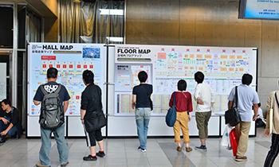
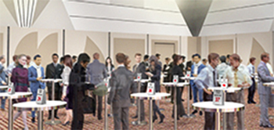
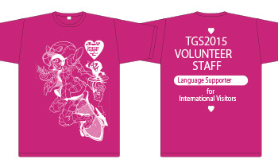

初めてのTGS ～ビジネスデイ編～
※TGS2014の写真で会場の様子や雰囲気を事前に把握しておきましょう。ただしTGS2015は、TGS2014と必ずしも同じではありませんので写真はイメージとしてご覧ください。
会場内で知っておきたいこと
各社の出展場所や展示内容のチェック方法
会場内は非常に混雑します。各社の出展場所や展示内容を、公式サイトで事前にチェックするか、当日、入場口などにご用意している公式ガイドブックや、無料でダウンロードできる公式アプリにてご確認ください。
今年は、幕張メッセ南側の1-8ホール、北側の9-11ホールの全館を使用しますが、「ファミリーコーナー」（１ホール）、コスプレエリア（9ホール）、「Cyber Games Asia」（10ホール）、 「大抽選会」（10ホール）は、一般公開日のみの実施となります。

なお、公式サイトのトップページでは、メディアパートナーや出展社のニュースが随時更新されているので事前に情報がチェックできます。
会場マップは、会期直前に、公式サイト（「出展社一覧」のページにアップ予定）にも掲載します。 出展社のブース位置が検索できる公式アプリ（iOS、Android対応）は会期直前に公開します（アプリの概要は「出展社一覧」から見られる予定）。
「東京ゲームショウ2015」のソーシャルサービス公式アカウントは、以下の通りです。
・ツイッター：「Tokyo_Game_Show」
・フェイスブック：「Tokyo_Game_Show」
商談のアポイントメントの取り方
「ビジネスデイ」に出展社と商談をしたい方は、事前にWebでアポイントのオファーができるシステム「アジア・ビジネス・ゲートウェイ」をぜひご利用ください。これは会期中に来場者が出展社と商談するために活用できる、公式サイト上の無料アポイントシステムです。
技術や製品、サービスなどの情報を検索して、各出展社の担当者に来場者がコンタクトでき、ビジネスデイ会期中にアポイントの申し込みができます。


また今年から、ビジネスデイ来場者が、Webのアポイントシステム（アジア・ビジネス・ゲートウェイ）を使って、来場者同士の商談もできる「プレミアムラウンジ・メンバーシップ」を、人数限定で募集します。申込方法は、「ビジネスデイ＜9/17（木）～18（金）＞の入場方法」をご参照ください。
「プレミアムラウンジ・メンバーシップ」をお申し込みいただいた来場者は、国際会議場2階に設置するミーティングエリア「プレミアムラウンジ」をご利用いただけます。

イメージ図
イメージ図
ビジネスデイに開催されるイベントに参加する方法
2日目（18日）の14時30分～17時（予定）に、10ホール「Cyber Games Asia」の南側ステージにて、ゲームアイデアの発掘イベント「センス・オブ・ワンダー ナイト2015」を開催します。 国内外から応募された多数の作品の中から、「センス・オブ・ワンダー」を感じられる10タイトルを選出。会場でプレゼンテーションしていただき、各賞を発表するイベントです。 ビジネスデイ来場者は自由に聴講できます（無料）。


外国語の対応について
公式ホームページや入場時に配布する公式ガイドブックは、4カ国語（英語、ハングル、簡体中文、繁體中文）で表記しています（一部は日本語のみ）。
各ブースの外国語対応は、出展社によって異なります。
会場内では留学生による通訳ボランティアをインフォメーションなどに配置する予定です。ピンク色の専用スタッフTシャツを着ていますので、言葉でお困りの方がいらっしゃいましたら、声をかけてください。

Wi-Fi使用のルール
幕張メッセ1～8ホールの会場内では、モバイルルーターやスマートフォン、携帯型ゲーム機の無線LAN（Wi-Fi）の設定をOFFにしていただいています（お願いとご注意 ）。
近年、各種モバイル機器が急激に増えたことで、会場内の電波環境が悪くなっており、ゲームのデモンストレーションや試遊などに影響が出る恐れがあるからです。無線LANをお使いになりたい場合は、1-8ホール2階コンコース（エスカレータ上）の無線LANエリア（無料）をご利用ください。

カメラやスマートフォンなどで会場内を撮影する際の注意点
ブースを撮影する場合は、各出展社によってルールがあるので、それを守ってください（撮影を禁止している場合があります）。
また、テレビ・新聞・雑誌や東京ゲームショウ事務局が、報道や記録のため会場内のさまざまな場所で撮影をしています。ご自身が写り込む可能性があることをご留意ください。


2002-2015 CESA / Nikkei Business Publications, Inc. All rights reserved.